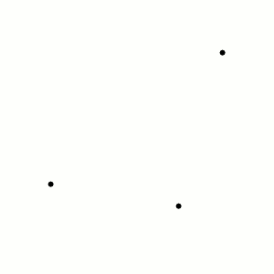
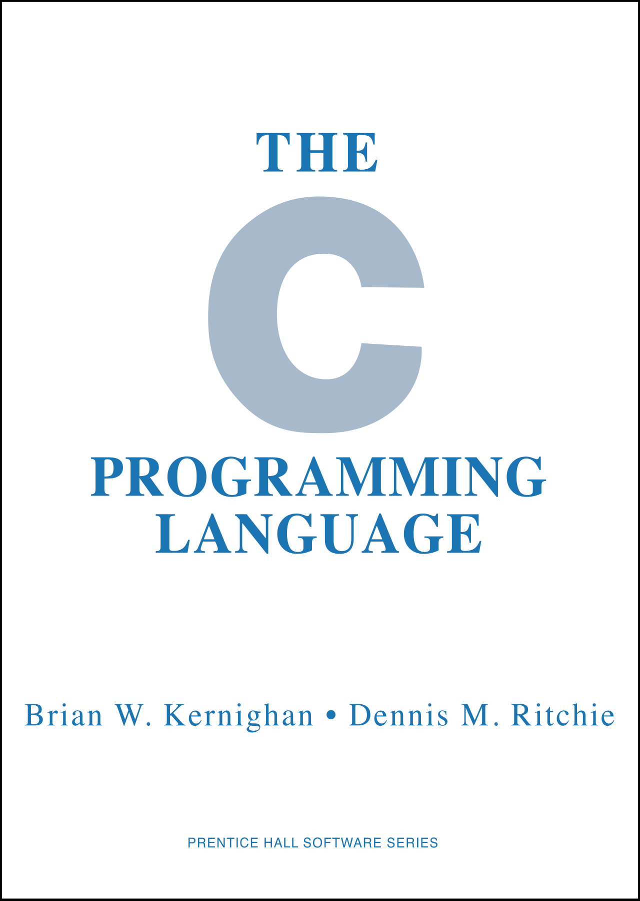
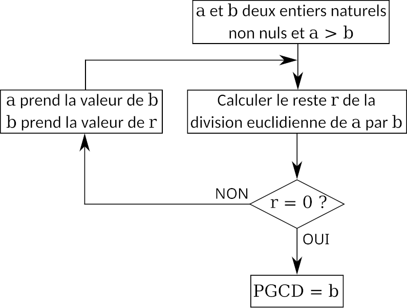

Dans ce premier CM, nous allons introduire le principe de ce qu'est la programmation informatique en tant que réalisation d'un fichier qui est compilé à l'aide d'un outil puis exécuté par l'odinateur dans un second temps.
La programmation est une activité qui consiste en la réalisation d'un fichier texte qui contient des instructions que l'ordinateur doit suivre pour réaliser une tâche donnée. Ces instructions sont écrites dans un langage de programmation qui est ensuite compilé par un outil spécifique pour générer un fichier exécutable qui peut être lancé par l'ordinateur. Ce fichier texte répond à un certain nombre de règles syntaxiques qui sont spécifiques au langage de programmation utilisé. Ces règles syntaxiques sont définies par un ensemble de règles qui sont spécifiques à chaque langage de programmation.
On écrit un programme pour résoudre un problème donné qui peut être de nature très diverses. Par exemple, on peut écrire un programme pour calculer la trajectoire d'un objet en chute libre, pour trier une liste d'éléments ou pour afficher un message à l'écran. Les programmes peuvent être de nature très diverses et peuvent être écrits dans une grande variété de langages de programmation.
Associé à la programmation, une branche de l'informatique appelée l'algorithmique est étudiée. L'algorithmique est la science qui étudie les algorithmes, c'est-à-dire les méthodes pour résoudre un problème donné. L'algorithmique est une discipline qui est étudiée en parallèle de la programmation et qui est essentielle pour écrire des programmes efficaces et corrects. Un autre sujet d'étude correspond à la réalisation de structures de données qui sont des objets qui permettent de stocker des informations de manière structurée.
Dans ce cours nous nous intéresserons principalement aux aspects de l'algorithmique et des structures de données en partant du language C.
Exemples de programmes intéressants (pour votre professeur..)
Illustrons tout d'abord des usages qui me paraissent intéressants de la programmation informatique. Ces exemples sont tirés de la physique et des mathématiques et montrent comment la programmation informatique est utilisée pour résoudre des problèmes complexes.
Un exemple issu de la physique: le problème à 3 corps

Un exemple de trajectoires obtenues à partir de conditions initiales données. Source:Wikipedia.
Le problème à trois corps est un problème classique de la physique qui consiste à étudier le mouvement de trois corps sous l'influence de la gravitation. Ce problème est très difficile à résoudre de manière analytique et nécessite souvent l'utilisation de méthodes numériques pour obtenir des solutions. Un exemple de trajectoires obtenues à partir de conditions initiales données est donné en marge.
Les trajectoires sont calculées à partir de l'équation de Newton qui décrit le mouvement des corps sous l'influence de la gravitation. Cette équation est donnée par:
$$
m_i \frac{d^2 \vec{r}_i}{dt^2} = \sum_{j \neq i} \frac{G m_i m_j}{||\vec{r}_j - \vec{r}_i\|^2} (\vec{r}_j - \vec{r}_i),
$$
où \(m_i\) est la masse du corps, \(\vec{r}_i\) est sa position, \(G\) est la constante de gravitation et \(t\) est le temps. Cette équation est résolue numériquement pour obtenir les trajectoires des corps. Le lecteur intéressé pourra lire la page Wikipedia qui donne plus de détails sur ce problème. Une simulation en Javascript est disponible ici.
La simulation numérique permet d'observer des comportements très variés en fonction des conditions initiales choisies, ce qui serait impossible sans un programme informatique pour approximer la solution de manière numérique.
Un exemple de simulation numérique issu des mathématiques: les fractales
Une visualisation de l'ensemble de Mandelbrot permettant d'observer la structure d'auto-similarité. Source:Wikipedia.
Les fractales sont des objets mathématiques qui ont la propriété d'être auto-similaires, c'est-à-dire qu'ils ont la même structure à différentes échelles. Les fractales sont utilisées pour modéliser des phénomènes naturels tels que les montagnes, les nuages ou les côtes maritimes. Un exemple classique de fractale est l'ensemble de Mandelbrot qui est défini par l'équation:
$$
z_0 = 0, \quad z_{n+1} = z_n^2 + c,
$$
où \(c\) est un nombre complexe. L'ensemble de Mandelbrot est l'ensemble des nombres complexes \(c\) pour lesquels la suite \(z_n\) reste bornée. L'ensemble de Mandelbrot est un objet fractal qui a une structure complexe et qui peut être visualisé à l'aide d'un programme informatique. Un exemple de visualisation de l'ensemble de Mandelbrot est donné en marge.
Le langage C dans tout ça
Le langage C est un langage de programmation très populaire qui a été créé en 1972 par Dennis Ritchie. Le langage C est un langage de programmation de bas niveau qui est utilisé pour écrire des systèmes d'exploitation, des applications système et des logiciels embarqués. Le langage C est un langage de programmation impératif qui est basé sur des instructions séquentielles qui sont exécutées les unes après les autres. Il s'agit langage de programmation très puissant qui permet de réaliser des programmes très efficaces et très rapides, ce qui le rends populaire pour de nombreuses applications.
#include <stdio.h>
int main(){
printf("Hello world!");
}
Le choix du C dans le cadre du cours est issu du fait qu'il s'agit d'un langage dis bas-niveau qui permet de comprendre les mécanismes internes de l'ordinateur. Notamment il permet de comprendre le processus de compilation ainsi que la gestion de la mémoire RAM dans l'ordinateur.
Loin d'être une liste exhaustive de tout ce que le langage C peut faire, nous nous intéressons ici aux éléments de base qui permettent de comprendre comment écrire un programme simple en C. Le lecteur est invité à se référencer au livre de référence de Brian Kernighan et Dennis Ritchie pour plus de détails sur le langage C.

Brian Kernighan et Dennis Ritchie, The C Programming Language, Prentice Hall, 1988. Disponible ici.
Les éléments de base de la programmation C
Familiarisons nous avec les éléments du language C qui nous permettront d'écrire des programmes par la suite. Loin d'être une liste exhaustive de tous les éléments de syntaxe du langage C, nous nous intéressons ici aux éléments de base qui permettent de comprendre comment écrire un programme simple en C.
Un programme en C suit une structure bien définie, et chaque élément a un rôle spécifique. Comprendre cette structure est essentiel pour écrire et organiser correctement votre code.
Directives de Préprocesseur
Les directives de préprocesseur sont des instructions qui commencent par # et sont traitées avant la compilation du programme. Les plus courantes incluent l'inclusion de fichiers d'en-tête (ou bibliothèques) et la définition de constantes.
#include <stdio.h>
Que fait cette ligne ? : Elle inclut la bibliothèque standard d'entrée/sortie (stdio.h) qui contient des fonctions comme printf et scanf pour afficher du texte ou lire des données.
Pourquoi est-elle importante ? : Sans cette directive, vous ne pourriez pas utiliser les fonctions standards comme printf, ce qui limiterait considérablement vos possibilités.
Autres directives courantes :
#define PI 3.14159
Ici, PI est remplacé par 3.14159 partout dans le code.
La Fonction main
La fonction main est le point de départ de tout programme en C. C’est ici que le programme commence son exécution. Voici un exemple détaillé :
int main() {
// Instructions du programme
return 0;
}
int : Le type de retour de la fonction main. Il indique que la fonction renvoie un entier (int), généralement 0, pour signaler que le programme s'est terminé avec succès.
main : Le nom de la fonction principale. C'est un nom spécial reconnu par le compilateur comme le point d'entrée du programme.
() : Les parenthèses indiquent que main est une fonction. Dans certains cas, elles peuvent contenir des paramètres, mais pour un programme de base, elles sont vides.
{ } Les accolades délimitent le corps de la fonction. Toutes les instructions à l'intérieur de ces accolades seront exécutées lorsque le programme sera lancé.
Affichage de Texte avec printf
Une des premières fonctions que vous utiliserez est printf, qui sert à afficher du texte à l'écran.
printf("Bonjour, le monde!\n");
printf : C'est une fonction fournie par stdio.h qui permet d'afficher du texte sur la console.
"Bonjour, le monde!\n" : Ce texte est ce que la fonction va afficher. Le \n à la fin signifie "nouvelle ligne", donc après avoir affiché "Bonjour, le monde!", le curseur se déplace à la ligne suivante.
Retourner une Valeur avec return
La fonction main doit toujours se terminer par une instruction return, qui indique la fin du programme et renvoie un code au système d'exploitation.
return 0;
Pourquoi 0 ? : En C, retourner 0 signifie que le programme s'est terminé correctement. D'autres valeurs peuvent être utilisées pour indiquer des erreurs ou des états spécifiques, mais 0 est la convention pour un succès.
Les Variables dans main
Vous pouvez déclarer et utiliser des variables à l'intérieur de la fonction main. Par exemple :
int main() {
int nombre = 10; // Déclaration d'une variable entière
printf("Le nombre est %d\n", nombre);
return 0;
}
int nombre = 10; : Cette ligne déclare une variable appelée nombre de type entier (int) et l'initialise à 10.
%d : Dans printf, %d est un spécificateur de format qui indique où insérer la valeur d'une variable entière.
Comment le Programme Fonctionne-t-il ?
Lorsqu’un programme C est exécuté :
Le compilateur lit les directives de préprocesseur pour inclure les fichiers nécessaires.
Il trouve la fonction main et commence à exécuter les instructions dans l'ordre.
Chaque ligne de code dans main est exécutée séquentiellement.
Une fois que toutes les instructions sont exécutées, le programme atteint l'instruction return 0; et se termine en signalant que tout s'est bien passé.
Voici une vue d'ensemble d'un programme complet :
#include <stdio.h> // Inclusion de la bibliothèque standard
int main() {
// Déclaration et initialisation de variables
int nombre = 10;
// Affichage du nombre
printf("Le nombre est %d\n", nombre);
// Fin du programme
return 0;
}
Cet exemple met en lumière les éléments essentiels que chaque programme C doit contenir et explique comment ils fonctionnent ensemble pour créer un programme fonctionnel.
Types de Base en C
En C, il existe plusieurs types de base que vous pouvez utiliser pour stocker différentes sortes de données. Voici les principaux types de base :
int : Utilisé pour stocker des nombres entiers.
float : Utilisé pour stocker des nombres à virgule flottante (simple précision).
double : Utilisé pour stocker des nombres à virgule flottante (double précision).
char : Utilisé pour stocker des caractères uniques.
Affichage des Variables à l'Écran
Pour afficher les valeurs des variables à l'écran, on utilise la fonction printf. Selon le type de variable, on a des spécificateurs de format différents :
On détaillera le cas de char ainsi que la syntaxe de la création de celui-ci dans des prochains CMS
%d : Pour afficher une variable de type int.
%f : Pour afficher une variable de type float.
%lf : Pour afficher une variable de type double.
%c : Pour afficher une variable de type char.
%s : Pour afficher une chaîne de caractères (un tableau de char).
Voici des exemples montrant comment déclarer des variables de chaque type et les afficher à l'écran :
Entier : 10
Décimal (float) : 3.140000
Grand décimal (double) : 3.141593
Caractère : A
Chaîne de caractères : Bonjour!
Notez que par défaut, %f et %lf affichent six chiffres après la virgule. Vous pouvez spécifier le nombre de chiffres après la virgule avec %.nf, où n est le nombre de chiffres souhaité.
Compilons l'exemple du programme "Hello World!"
Nous avons ainsi vu les éléments structurants de la syntaxe C. Mais il ne suffit pas d'écrire un programme pour qu'il soit exécuté. Il faut le compiler.
A partir du terminal avec gcc
Une première approche pour compiler, consiste en l'utilisation d'un terminal.
Pour cela, nous allons utiliser le compilateur gcc qui est un compilateur C très populaire. Pour compiler un programme en C, vous devez exécuter la commande suivante dans un terminal :
gcc -o hello hello.c
Cette commande compile le fichier hello.c et crée un fichier exécutable appelé hello. Si la compilation se passe bien, vous pouvez exécuter le programme en tapant :
./hello
Cela affichera le message "Hello, World!" sur votre console. Félicitations, vous avez écrit et exécuté votre premier programme en C !
Avec un IDE: Le cas VsCode
Une autre approche consiste à utiliser un IDE (Integrated Development Environment) qui est un environnement de développement intégré qui facilite l'écriture, la compilation et l'exécution de programmes. Un IDE populaire pour le développement en C est Visual Studio Code (VSCode).
Pour compiler et exécuter un programme en C avec VSCode, vous devez :
Installer l'extension C/C++ pour VSCode.
Créer un nouveau fichier C dans VSCode.
Écrire votre programme en C.
Appuyer sur Ctrl + Shift + B pour compiler le programme.
Exécuter le programme en appuyant sur F5.
Un terminal intégré affichera les résultats de la compilation et de l'exécution de votre programme. Cela vous permet de voir les erreurs et les messages de sortie directement dans VSCode.
Les structures de contrôle en C
Les structures de contrôle permettent de contrôler le flux d'exécution d'un programme en fonction de certaines conditions. Les structures de contrôle les plus courantes en C sont les suivantes :
Les instructions conditionnelles avec if
L'instruction if permet d'exécuter un bloc de code si une condition est vraie. Voici un exemple :
int nombre = 10;
if (nombre > 0) {
printf("Le nombre est positif.\n");
}
La Boucle for
La boucle for est utilisée pour répéter un bloc de code un nombre spécifique de fois. Elle est particulièrement utile lorsque vous savez à l'avance combien de fois vous voulez exécuter un bloc de code.
La syntaxe de base d'une boucle for en C est la suivante :
for (initialisation; condition; incrément) {
// Bloc de code à exécuter
}
Voici un exemple simple :
for (int i = 0; i < 5; i++) {
printf("i vaut %d\\n", i);
}
Dans cet exemple :
Initialisation :int i = 0; - Cette partie initialise la variable i à 0.
Condition :i < 5; - Tant que cette condition est vraie, la boucle continue de s'exécuter.
Incrément :i++; - Après chaque itération, la variable i est incrémentée de 1.
Le résultat de ce code sera :
i vaut 0
i vaut 1
i vaut 2
i vaut 3
i vaut 4
La Boucle while
La boucle while est utilisée pour répéter un bloc de code tant qu'une condition spécifiée est vraie. Contrairement à la boucle for, vous n'avez pas besoin de connaître à l'avance le nombre d'itérations.
La syntaxe de base d'une boucle while en C est la suivante :
while (condition) {
// Bloc de code à exécuter
}
Voici un exemple simple :
int i = 0;
while (i < 5) {
printf("i vaut %d\\n", i);
i++;
}
Dans cet exemple :
Condition :i < 5; - Tant que cette condition est vraie, la boucle continue de s'exécuter.
Incrément :i++; - À chaque itération, la variable i est incrémentée de 1 pour éviter une boucle infinie.
Le résultat de ce code sera le même que pour la boucle for :
i vaut 0
i vaut 1
i vaut 2
i vaut 3
i vaut 4
Les Fonctions
Une fonction en C est un bloc de code qui effectue une tâche spécifique. Elle permet de diviser un programme en morceaux plus petits, plus faciles à comprendre et à gérer. Une fonction peut prendre des paramètres (les données d'entrée) et renvoyer une valeur (le résultat).
Prototype d'une Fonction
Le prototype d'une fonction est une déclaration qui indique au compilateur le nom de la fonction, son type de retour, et les types de ses paramètres. Il est généralement placé avant la fonction main, ou dans un fichier d'en-tête séparé.
Voici un exemple de prototype pour une fonction qui additionne deux nombres entiers :
int addition(int a, int b);
Définition d'une Fonction
La définition d'une fonction comprend le code réel qui sera exécuté lorsque la fonction sera appelée. Elle correspond au prototype, mais avec le corps de la fonction ajouté.
type_de_retour nom_de_fonction(type_param1 param1, type_param2 param2, ...) {
// Corps de la fonction
return valeur_de_retour;
}
Voici un exemple de fonction qui additionne deux nombres entiers :
int addition(int a, int b) {
int resultat = a + b;
return resultat;
}
Appel d'une Fonction
Pour utiliser une fonction, vous devez l'appeler dans le corps de votre programme, généralement dans la fonction main. Lors de l'appel, vous fournissez les valeurs des paramètres.
int main() {
int x = 5;
int y = 10;
int somme = addition(x, y);
printf("La somme de %d et %d est %d\n", x, y, somme);
return 0;
}
Dans cet exemple, la fonction addition est appelée avec les valeurs x et y comme paramètres. Le résultat est ensuite stocké dans la variable somme et affiché à l'écran.
Explication Détailée
Prototype :int addition(int a, int b); - Indique que la fonction addition prend deux entiers en entrée et renvoie un entier.
Paramètres (Entrées) :int a et int b - Ce sont les variables d'entrée que la fonction utilisera. Elles sont déclarées avec leur type.
Corps de la Fonction : C'est le code qui réalise la tâche, ici l'addition de a et b.
Valeur de Retour :return resultat; - La fonction renvoie la valeur de resultat à l'endroit où elle a été appelée.
Appel de Fonction :addition(x, y); - C'est ainsi que vous invoquez la fonction dans le programme, en fournissant les valeurs des paramètres.
Exemple du jeu de nim
Illustrons l'utilisation de C pour réaliser le jeu de nim dont les règle sont les suivantes:
Le jeu commence avec un certain nombre de batonnets sur la table (12).
À chaque tour, un joueur peut retirer un nombre de batonnets compris entre 1 et 3.
Le joueur qui prend le dernier bâtonnet gagne la partie.
Une implémentation en pratique pourrait ressembler à cela:
#include <stdio.h>
#include <stdlib.h>
int prendre_batons_entree(int nombre_batonnets){
int nombre_pris;
do {
printf("Entrez un nombre de batonnets à prendre: ");
scanf("%d", &nombre_pris);
} while (nombre_pris<1 || nombre_pris>3 || nombre_pris>nombre_batonnets);
return nombre_pris;
}
void afficher_batonnets(int nombre_batonnets){
printf("Nombre batonners restants: %d\n", nombre_batonnets);
for (int i=0; i<nombre_batonnets; i++) {
printf("|");
}
printf("\n");
}
int main(int argc, char *argv[])
{
int nombre_batonnets = 12;
int nombre_pris;
int joueur = 0;
printf("Bienvenue dans le jeu de NIM!\n");
// Tour du jeu
do {
afficher_batonnets(nombre_batonnets);
printf("Joueur %d : ", joueur + 1);
nombre_pris = prendre_batons_entree(nombre_batonnets);
nombre_batonnets -= nombre_pris;
joueur = (joueur + 1) % 2;
} while (nombre_batonnets!=0);
printf("Bravo ! Joueur %d à gagné \n", (joueur+1)%2 );
return EXIT_SUCCESS;
}
Plusieurs commentaires :
La fonction prendre_batons_entree permet de demander à l'utilisateur de saisir un nombre de bâtonnets à prendre. Elle vérifie que le nombre est valide avant de le renvoyer.
La fonction afficher_batonnets affiche le nombre de bâtonnets restants sous forme de barres verticales. On utilise le fait que printf ne saute pas de ligne après chaque appel.
La fonction main est le point d'entrée du programme. Elle initialise les variables, affiche un message de bienvenue, puis exécute le jeu en alternant les tours des joueurs jusqu'à ce qu'un joueur gagne.
L'alternance entre les joueurs est gérée par la variable joueur qui est incrémentée à chaque tour. Grâce au modulo 2, on alterne entre les valeurs 0 et 1 pour les joueurs.
Les tours de jeux sont gérés par une boucle do...while qui continue jusqu'à ce que tous les bâtonnets soient pris. On prends cette commande plutôt que while pour éviter de répéter le code d'affichage des bâtonnets et de devoir faire la demande de saisie avant le début de la boucle.
Exemple d'un programme qui calcule le pgcd de deux nombres

Une visualisation de l'algorithme d'Euclide. Source:Wikipedia.
Le Plus Grand Commun Diviseur de deux nombres est le plus grand nombre qui divise les deux nombres sans laisser de reste. On peut calculer le PGCD de deux nombres en utilisant l'algorithme d'Euclide qui est un algorithme classique pour calculer le PGCD de deux nombres. L'algorithme d'Euclide est basé sur la propriété suivante: si \(a\) et \(b\) sont deux nombres entiers, alors le PGCD de \(a\) et \(b\) est égal au PGCD de \(b\) et \(a \mod b\). Cet algorithme est récursif et s'arrête lorsque le reste de la division de \(a\) par \(b\) est nul. Un exemple de programme qui calcule le PGCD de deux nombres sera fait en TD1.

{kind=link}
 Une visualisation de l'ensemble de Mandelbrot permettant d'observer la structure d'auto-similarité. Source:Wikipedia.
Les fractales sont des objets mathématiques qui ont la propriété d'être auto-similaires, c'est-à-dire qu'ils ont la même structure à différentes échelles. Les fractales sont utilisées pour modéliser des phénomènes naturels tels que les montagnes, les nuages ou les côtes maritimes. Un exemple classique de fractale est l'ensemble de Mandelbrot qui est défini par l'équation:
$$
z_0 = 0, \quad z_{n+1} = z_n^2 + c,
$$
où \(c\) est un nombre complexe. L'ensemble de Mandelbrot est l'ensemble des nombres complexes \(c\) pour lesquels la suite \(z_n\) reste bornée. L'ensemble de Mandelbrot est un objet fractal qui a une structure complexe et qui peut être visualisé à l'aide d'un programme informatique. Un exemple de visualisation de l'ensemble de Mandelbrot est donné en marge.
Une visualisation de l'ensemble de Mandelbrot permettant d'observer la structure d'auto-similarité. Source:Wikipedia.
Les fractales sont des objets mathématiques qui ont la propriété d'être auto-similaires, c'est-à-dire qu'ils ont la même structure à différentes échelles. Les fractales sont utilisées pour modéliser des phénomènes naturels tels que les montagnes, les nuages ou les côtes maritimes. Un exemple classique de fractale est l'ensemble de Mandelbrot qui est défini par l'équation:
$$
z_0 = 0, \quad z_{n+1} = z_n^2 + c,
$$
où \(c\) est un nombre complexe. L'ensemble de Mandelbrot est l'ensemble des nombres complexes \(c\) pour lesquels la suite \(z_n\) reste bornée. L'ensemble de Mandelbrot est un objet fractal qui a une structure complexe et qui peut être visualisé à l'aide d'un programme informatique. Un exemple de visualisation de l'ensemble de Mandelbrot est donné en marge.
{kind=link}

{kind=link}